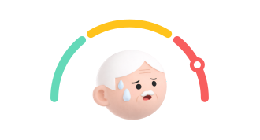

골다공증성 골절에 특히 주의하세요.
대장암에 특히 주의하세요.
해당하는 질환이 없어요.
치매에 특히 주의하세요.
심혈관질환에 특히 주의하세요.
사망률 1위 질환
- 최근 10년간의 국가건강검진 정보 또는 5년간의 건강보험심사평가원 정보와 고객의 일일건강입력정보를 기반으로 연세의료원, 연세대학교 CONNECT-AI 연구센터, 온택트헬스의 AI 전문가들이 직접 참여하여 제공하는 분석 결과입니다.
- 주요 질환 위험도 분석에 표시된 정상 범위는 가장 최신 연도의 국민건강보험공단의 참고치를 따릅니다.
- 위 화면은 Onione에서 구성한 화면입니다.